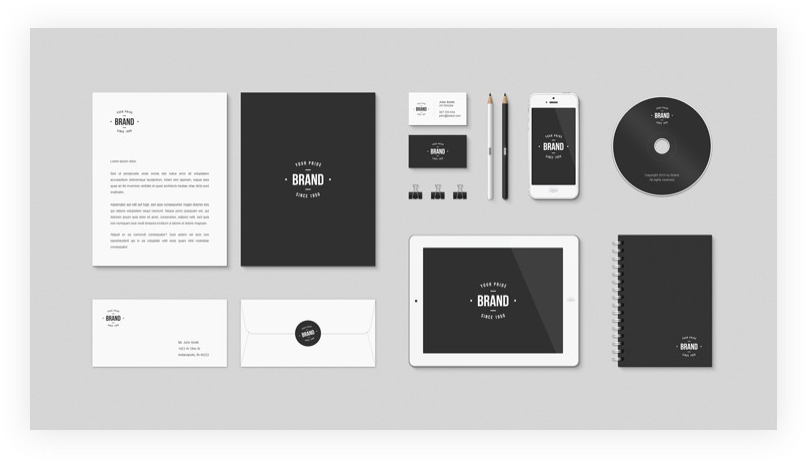
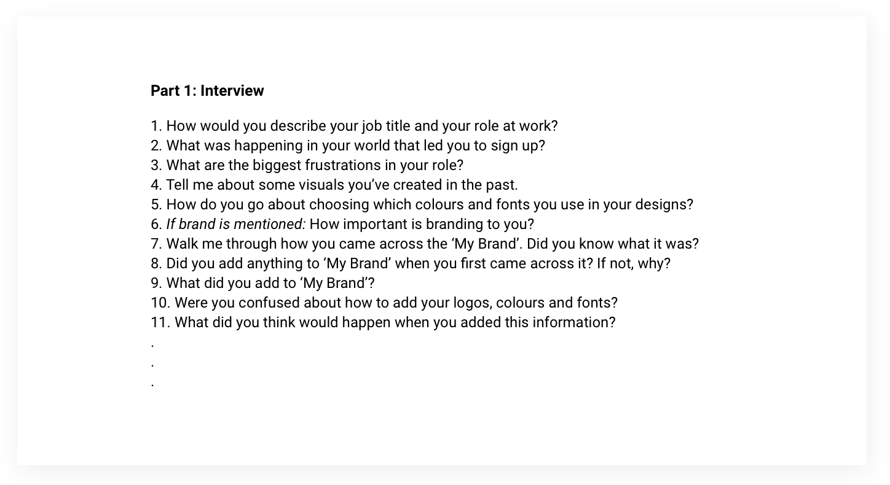
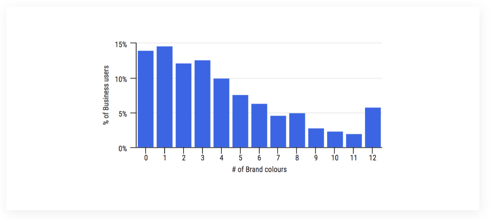
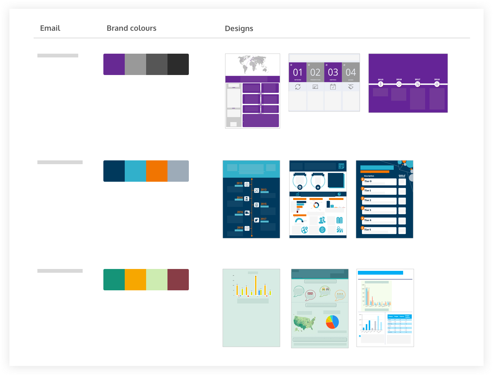
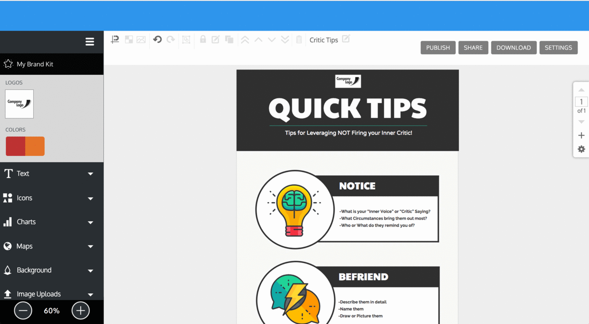
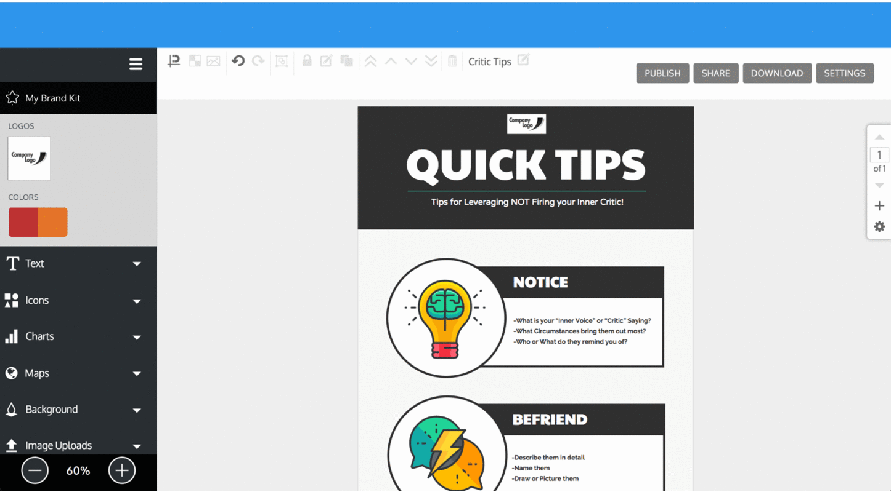
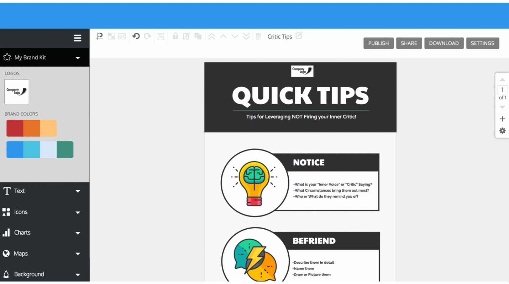

AUTOBRAND
‘Autobrand’ is a one-click branding feature on Venngage that allows you to apply your logo and brand colour(s) to any design that you create. This feature uses a colour-matching algorithm where you can click through to see various combinations of your brand.
My Role
Design Lead
Timeline
May - June 2018
Deliverables
End-to-end development
The goal is to redesign the current brand experience in the Venngage editor to help users complete their branded designs faster. Research has shown that users who are successful at creating branded designs are more likely to retain.
First, I went through the user flow to understand how the existing brand feature works. Users with the business plan have full access to the ‘My Brand’ page. On this page they can add in their logos, brand colours and fonts in order access them later while they are working on their designs.
Users can upload their brand assets in the ‘My Brand’ page.
After going through the flow, it was clear that the brand application process was very manual. Users had to select and colour one element at a time. The brand logos, colours and fonts were hidden in different menu locations. There was nothing in the editor to indicate how these brand assets can be used.
Questions: What do existing tools offer for branding? How do we differentiate?
Tools in the market generate personalized template packages (letterheads, business cards, presentations etc.) based on logos, colours and font input. However, for a tool with hundreds of custom designed graphics —flexibility and customization are key.
Questions: What are users creating with the current brand feature? What do successful templates look like?
Step 1: Setting up User Calls
User calls are important when you are making significant changes to an existing feature. Here I spoke with business users who have used ‘My Brand’ to learn about their goals, expectations and what this feature helps them achieve.
We learned that:
Next, I worked with a designer and developer to see how users interact with the ‘My Brand’ page. Specifically, how many colours users added and the combination of colours they used.
If colours generally went well together, I could better assume that brand colours were added intentionally.
We learned that:
The data showed that half of the sample of users added between 1–4 brand colours. There was also a significant number of users who didn’t add any colours and fair amount of users who added twelve colours!
Combining the quantitative data with the qualitative data was where I got to see how people actually use brand colours in their designs.
Below are examples of brand colours added by our users. With this data, I was able to compare the designs that our users created with the colours they add to their brand.
We learned that:
The data showed that half of the sample of users added between 1–4 brand colours. There was also a significant number of users who didn’t add any colours and fair amount of users who added twelve colours!
What is worth doing? Tradeoff between importance and feasibility/viability.
After the research component, I tested the concept of a branding feature within the editor against generating branded templates in the ‘My Brand’ page as existing tools did.
Testing with existing users showed that displaying templates in the ‘My Brand’ page helped them better visualize their colours. However, with the selection of templates offered, it was more important to be able to apply brand to any design.

Sketches for generating templates in ‘My Brand’ page vs. in the Editor.
Next, I tested the ease of accessing the Autobrand feature within the editor and rules for colour application.
1) Applying One Colour
In this prototype, users could add multiple brand colours, but can only applying one colour. Users -“how do I add both? I’m a little confused about how I can add both”, “that’s weird… why would it not apply both colours?”.
2) Automatically Apply Brand Colours
Users are able to add multiple brand colours, but the colours are randomly applied to their designs. Users - “I don’t like not having options”, “I didn’t think it would choose it for me”, “I hope that you would be given some way to override the systems automatic edit”, “ I don’t see an option to switch around the colours”.
3) Shuffle Brand Colours
Users are able to add multiple brand colour palettes with option to shuffle. Users - “oh that is neat, it was easier than I expected”, “This is actually a really cool feature, it gives people a way to see how their brand colours can work together without having to do a lot, a great time saver, very handy!”.
Option 3 was the winner!
This was the first time I felt a pull from users who expressed excitement about how a feature like this would help their work.
A/B Testing results showed that retention for business users who successfully use the Autobrand in the editor increased by 23% compared to the control group.
The original task was to help users generate templates with more colour variations by introducing a colour palette feature. However, as I interacted with users more regularly, I started to see patterns with why some users were more likely to stay than others.
Although the execution was later handed off, this project was an opportunity for me to help people focus less on applying their brand and more on what they came on Venngage to do —to share their stories with others.